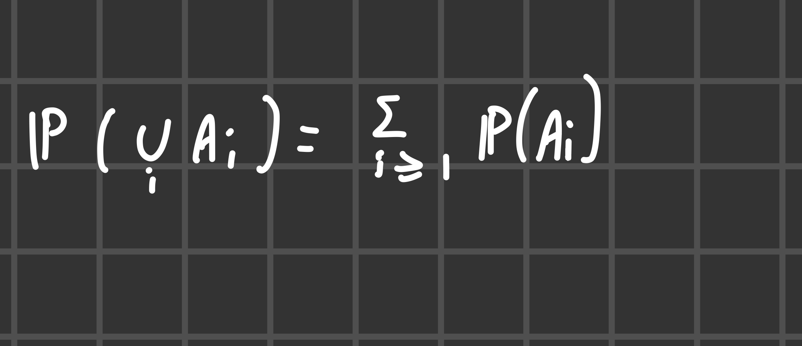
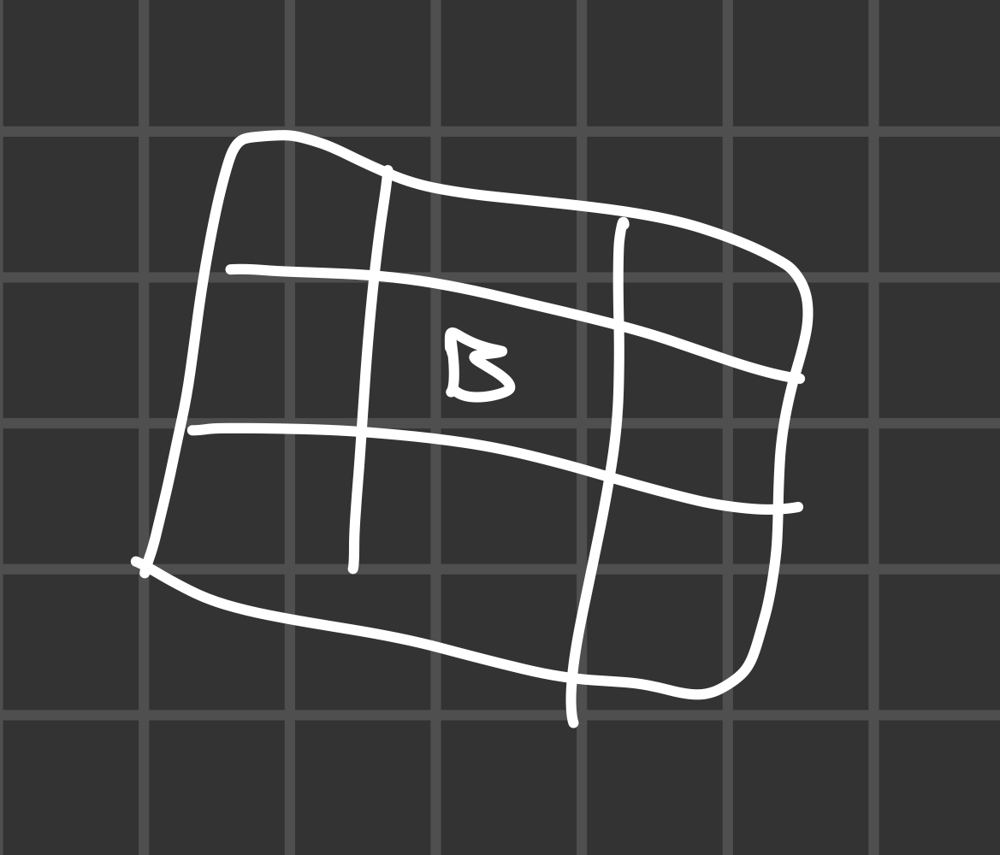
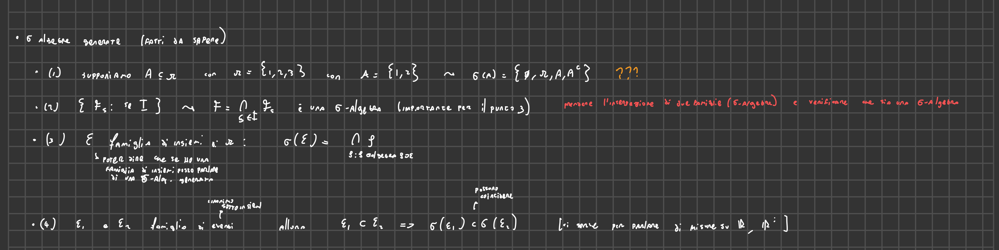
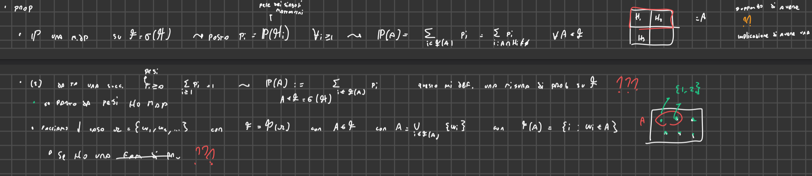
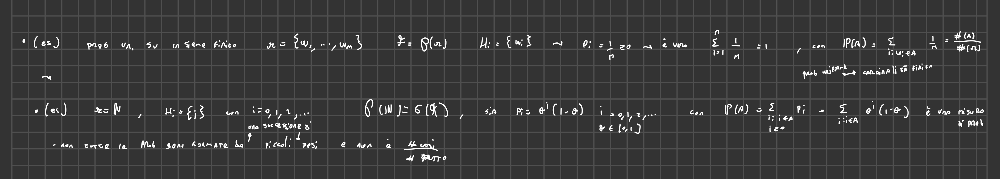
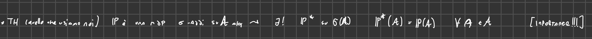

2025-02-18 08:16
Status: revisione_in_corso flashcard_finite riscritto_zero
Tags:probabilità sbobine
lez02-Prob
Definizione di Probabilità: Approccio Alternativo
Il professore introduce una definizione di probabilità leggermente diversa da quella standard, ma equivalente. Questa definizione alternativa non richiede esplicitamente che la probabilità dell’insieme vuoto sia zero.
Definizione
Sia (Ω, F) uno spazio misurabile, dove Ω è lo spazio campionario e F è una σ-algebra di eventi. Una funzione P: ℱ →|0,1| è una misura di probabilità se soddisfa le seguenti condizioni:
-
P(Ω) = 1 (la probabilità dell’evento certo è 1)
-
σ-additività (additività completa): Per ogni successione di eventi Aᵢ ∈ F tali che Aᵢ ∩ Aⱼ = ∅ per i ≠ j (eventi incompatibili), vale:
P(∪ᵢ Aᵢ) = ∑ᵢ P(Aᵢ)
- 
Equivalenza tra le Definizioni
La definizione standard di misura di probabilità include anche la condizione che P(∅) = 0. Il professore dimostra che la definizione alternativa è equivalente a quella standard, mostrando che la condizione P(∅) = 0 può essere derivata dalle altre proprietà.
Dimostrazione che P(∅) = 0
- 1→2
- 2→1
-
Si esprime l’insieme vuoto come unione numerabile di insiemi vuoti:
∅ = ∪ᵢ ∅
-
Sia p = P(∅). Per la σ-additività, si ha:
p = P(∅) = P(∪ᵢ ∅) = ∑ᵢ P(∅) = ∑ᵢ p
-
Quindi, p = ∑ᵢ p. Questo è possibile solo se p = 0. Se p fosse strettamente positivo, la somma di infiniti valori positivi divergerebbe.
-
Pertanto, P(∅) = 0.
-
Commenti
- Questa dimostrazione mostra che la condizione P(∅) = 0 è ridondante nella definizione alternativa, poiché può essere derivata dalle altre proprietà.
- L’obiettivo del professore è di fornire una caratterizzazione utile per confrontare diverse definizioni di probabilità, ad esempio quella trovata nel libro di Protter.
Misure Finite e σ-Finite
Il professore introduce le definizioni di misura finita e misura σ-finita.
Misura Finita
Una misura μ su una σ-algebra F è detta finita se la misura dell’insieme totale è finita:
μ(Ω) < ∞
Esempio: Una misura di probabilità è una misura finita perché P(Ω) = 1.
Misura σ-Finita
Una misura μ su una σ-algebra ℱ è detta σ-finita se esiste una famiglia numerabile di insiemi misurabili Bᵢ ∈ F tale che:
- Gli insiemi Bᵢ sono disgiunti: Bᵢ ∩ Bⱼ = ∅ per i ≠ j
- L’unione degli insiemi Bᵢ è l’intero spazio: ∪ᵢ Bᵢ = Ω
- La misura di ogni insieme Bᵢ è finita: μ(Bᵢ) < ∞ per ogni i
Una famiglia di insiemi con queste proprietà è chiamata partizione numerabile o partizione misurabile numerabile dello spazio.
- 
Commenti
- La misura σ-finita è una generalizzazione della misura finita. Permette di lavorare con spazi di misura infinita, purché possano essere suddivisi in una quantità numerabile di sottoinsiemi di misura finita.
- Le misure che verranno utilizzate nel corso avranno spesso questa proprietà. Ad esempio, la misura di Lebesgue su ℝⁿ è σ-finita perché ℝⁿ può essere suddiviso in una quantità numerabile di cubi con lato di lunghezza finita.
rifattorizzo
Esempi di Misure di Probabilità
Il professore presenta tre esempi semplici di misure, che servono come base per costruire esempi più complessi.
1. Delta di Dirac (Massa Puntuale)
Sia Ω uno spazio qualsiasi e ω₀ ∈ Ω un punto fissato. La misura delta di Dirac δω₀ è definita come:
δω₀(A) = { 1 se ω₀ ∈ A { 0 se ω₀ ∉ A
δω₀(A) assegna probabilità 1 se l’insieme A contiene il punto ω₀ e probabilità 0 altrimenti.
- Commento: La delta di Dirac è una misura di probabilità degenere, perché assegna probabilità 1 a un singolo punto e 0 a tutto il resto. Dal punto di vista probabilistico, rappresenta un evento certo.
2. Misura di Conteggio
Sia Ω un insieme al più numerabile di punti ωᵢ. La misura di conteggio μ è definita come:
μ(A) = ∑ᵢ δωᵢ(A) = |{ωᵢ ∈ A}|
dove |{ωᵢ ∈ A}| indica il numero di elementi in A.
-
 In altre parole, μ(A) conta il numero di punti ωᵢ che appartengono all’insieme A.
In altre parole, μ(A) conta il numero di punti ωᵢ che appartengono all’insieme A. -
Esempio: Sia Ω = ℕ (numeri naturali) e A = {1, 3, 5}. Allora μ(A) = 3.
-
in questo caso μ(Ω) sarebbe infinito → non sarebbe una misura finita
3. Misura Discreta Generale
Sia Ω un insieme al più numerabile di punti ωᵢ e siano cᵢ dei numeri reali positivi. La misura discreta μ è definita come:
μ(A) = ∑{cᵢ : ωᵢ ∈ A}

In questo caso, ogni punto ωᵢ ha un peso cᵢ. La misura di un insieme A è la somma dei pesi dei punti che appartengono ad A.
- Se ∑ᵢ cᵢ = 1, allora μ è una misura di probabilità.
- Se ∑ᵢ cᵢ < ∞, allora μ è una misura finita.
- Se ∑ᵢ cᵢ = ∞, allora μ non è una misura finita.
Commenti
- Questi esempi mostrano come costruire misure a partire da punti isolati.
- Le misure discrete sono fondamentali in molti contesti probabilistici.
Sigma Algebra Generate da Famiglie di Insiemi
Il professore introduce il concetto di σ-algebra generata da una famiglia di insiemi.
Definizione
Data una famiglia di insiemi E, la σ-algebra generata da E, indicata con σ(E), è la più piccola σ-algebra che contiene tutti gli insiemi in E.
In altre parole, σ(E) è l’intersezione di tutte le σ-algebre che contengono E.
σ(E) = ∩{ℱ : ℱ è una σ-algebra e E ⊆ ℱ}
- 
Proprietà
Se E₁ ⊆ E₂, allora σ(E₁) ⊆ σ(E₂).
Esempio
Sia Ω = {1, 2, 3} e E = {{1, 2}}. Allora la σ-algebra generata da E è:
σ(E) = {∅, Ω, {1, 2}, {3}}
Commenti
- La σ-algebra generata da una famiglia di insiemi è un concetto fondamentale per costruire σ-algebre complesse a partire da insiemi più semplici.
- Questo concetto è particolarmente importante quando si lavora con spazi non numerabili, come la retta reale.
Probabilità su Spazi Numerabili (o finiti)
Il professore discute come definire misure di probabilità su spazi numerabili.
Partizioni Numerabili
Una partizione numerabile di uno spazio Ω è una famiglia numerabile di insiemi disgiunti H = {Hᵢ} tali che ∪ᵢ Hᵢ = Ω.
Sigma Algebra Generata da una Partizione Numerabile
La σ-algebra generata da una partizione numerabile H è l’insieme di tutte le unioni (finite o numerabili) di elementi di H.

Caratterizzazione delle Misure di Probabilità
Sia F la σ-algebra generata da una partizione numerabile H. Per definire una misura di probabilità P su F, è sufficiente assegnare un peso pᵢ ≥ 0 a ogni elemento Hᵢ della partizione, tale che ∑ᵢ pᵢ = 1.
La probabilità di un insieme A ∈ F è data da:
P(A) = ∑{pᵢ : Hᵢ ⊆ A}
- 
Esempio
Sia Ω = ℕ e H = {{1}, {2}, {3}, …}. Una misura di probabilità su F = P(ℕ) è completamente determinata dai pesi pᵢ = P({i}), con pᵢ ≥ 0 e ∑ᵢ pᵢ = 1.
- Probabilità Uniforme su un Insieme Finito: Se Ω = {ω₁, …, ωₘ}, si pone P(ωᵢ) = 1/m per ogni i.
- Distribuzione Geometrica: Sia Ω = ℕ₀ = {0, 1, 2, …} e sia 0 < θ < 1. Si definisce P(i) = θⁱ (1 - θ) per i ∈ ℕ₀. Questa è la distribuzione geometrica.
- 
Estensione e Unicità
Il professore introduce i concetti di estensione* e unicità* delle misure}.
Motivazione
Si vuole costruire misure* su spazi non* numerabili*, come la retta* reale*, che soddisfino certe proprietà intuitive. Ad esempio, si vorrebbe una misura μ su ℝ tale che μ([a, b]) = b - a per ogni intervallo* [a, b].
Teorema di Estensione di Carathéodory
Sia A* un’algebra* su Ω e sia μ una misura* σ-additiva* su A*. Allora esiste un’estensione* μ** di μ a σ(A)* che è una misura σ-additiva*. Se μ è σ-finita*, allora l’estensione è unica*.
- formulazione che usiamo noi 
Teorema di Unicità
Siano P e Q due misure* di probabilità* su una σ-algebra F. Sia C* una classe* di insiemi* tale che σ(C) = F. Se P(A) = Q(A) per ogni A ∈ C, allora P = Q. In altre parole, se due misure di probabilità coincidono* su una classe* che genera la σ-algebra*, allora coincidono* su tutta* la σ-algebra*.
P-Classe
Una classe C di insiemi è detta P-classe se è stabile* per intersezioni* finite*. Ovvero, se A₁, …, Aₙ ∈ C, allora A₁ ∩ … ∩ Aₙ ∈ C.
- Esempio di P-Classe: La famiglia di semirette della forma (-∞, x]* con x ∈ ℝ è una P-classe.
References